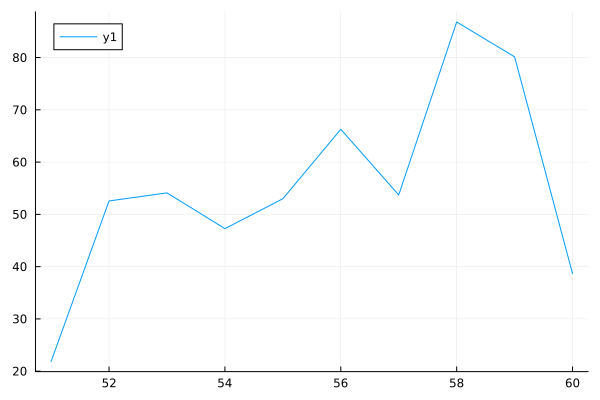
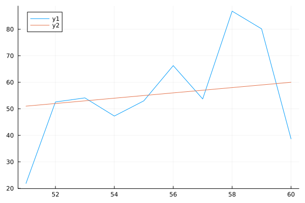

1.011.01"Julia"3.0Part I - Julia’s Look & Feel
Workshop Materials: https://github.com/brandmaier/lip2026-julia-workshop
Julia Online Sandbox: https://www.coderunbox.com/playground/playcode-julia
Julia is a relatively young (2012) programming language designed to be particularly effective for scientific workflows - the developers specifically call out Fortran and MATLAB as predecessors in this area.
Compared to these, Julia has much of the dynamic and interactive expressiveness of languages such as Python, whilst leveraging just-in-time compilation and specialization to allow performance approaching (and sometimes better than) high-performance compiled languages such as C, C++, Modern Fortran and Rust.
Sources: https://juliahep.github.io/JuliaHEP-2023/intro.html , https://physi.uni-heidelberg.de/~reygers/lectures/2024/julia/julia-01-intro.slides.html
Solves the dual-language problem. From ThinkJulia.jl:
Julia is a unique programming language because it solves the so-called two languages problem. No other programming language is needed to write high-performance code. This does not mean it happens automatically. It is the responsibility of the programmer to optimize the code that forms a bottleneck but this can done in Julia itself.
Open source and free: The whole language and all packages!
Easy to get started
Many third party libraries
Source: https://physi.uni-heidelberg.de/~reygers/lectures/2024/julia/julia-01-intro.slides.html
Easy to write yet fast
Full unicode support, e.g., this is valid code: α = α + 1
Excellent package manager with powerful libraries
Juptyer notebooks (for dynamic documents and reproducible research)
A variety of modern programming paradigms that makes Julia code highly efficient, elegant, and extensible (e.g., multiple dispatch, dynamic typing, functional chaining of methods (like pipes in R), etc..)
Some pointers to practical resources:
The Julia Cheat Sheet https://cheatsheets.quantecon.org/julia-cheatsheet.html
The “official” Cheat Sheet: https://cheatsheet.juliadocs.org/
Exercises: 100 Julia exercises with solutions: https://pythonjulia.blogspot.com/2022/03/100-julia-exercises-with-solutions.html
A set of introductory slides: https://physi.uni-heidelberg.de/~reygers/lectures/2024/julia/
Goal of the first part: Get the look&feel of Julia
Should look familiar to R and python users
1.011.01"Julia"3.0(here, we already see dynamic typecasting in action)
I am at number 1
I am at number 2
I am at number 3
I am at number 4or fancy using (\in with Tab):
Iterating over multiple things:
Now we use typed arguments to define variants of our functions depending on the input types (multiple dispatch):
Some operators and functions allow for broadcasting, which basically is applying it to every element:
This fails - why?
With broadcasting
or, for another instance:
Sequences are stored as abstract representations (memory efficiency!)
For more functionality, install packages from the registry:
10×2 DataFrame
Row │ age happiness
│ Int64 Float64
─────┼──────────────────
1 │ 51 21.8624
2 │ 52 52.5677
3 │ 53 54.1105
4 │ 54 47.2684
5 │ 55 52.9924
6 │ 56 66.2776
7 │ 57 53.7095
8 │ 58 86.8056
9 │ 59 80.1328
10 │ 60 38.652210-element Vector{Int64}:
51
52
53
54
55
56
57
58
59
6010-element Vector{Int64}:
51
52
53
54
55
56
57
58
59
6010×2 DataFrame
Row │ age happiness
│ Int64 Float64
─────┼──────────────────
1 │ 51 21.8624
2 │ 52 52.5677
3 │ 53 54.1105
4 │ 54 47.2684
5 │ 55 52.9924
6 │ 56 66.2776
7 │ 57 53.7095
8 │ 58 86.8056
9 │ 59 80.1328
10 │ 60 38.6522Sort an array (and return the sorted version):
Sort an array and replace the original with the sorted version (exclamation mark indicates modification):
using CSV, DataFrames
mydata = CSV.read("data/happy.tsv", DataFrames.DataFrame;
# ensures column names are valid Julia symbols
normalizenames = true,
# expect comma-separated values
delim = '\t',
# handle missing data
missingstring = ["", "NA", "NaN"],
# ignore duplicate column delimiters
ignorerepeated = true
)14×2 DataFrame
Row │ age happiness
│ Int64 Int64
─────┼──────────────────
1 │ 15 80
2 │ 16 88
3 │ 18 76
4 │ 64 50
5 │ 68 49
6 │ 66 66
7 │ 80 30
8 │ 82 77
9 │ 55 80
10 │ 15 99
11 │ 12 99
12 │ 12 80
13 │ 34 65
14 │ 65 35
Add to the plot using the modification operator

Find Julia here: https://julialang.org/
Step 0: Hello World
Step 00: Install some packages
mean() from package Statistics)
using CSV, DataFrames
data = CSV.read("data/exercise_sheet1.csv", DataFrames.DataFrame;
# ensures column names are valid Julia symbols
normalizenames = true,
# expect comma-separated values
delim = ',',
# handle missing data
missingstring = ["", "NA", "NaN"],
# ignore duplicate column delimiters
ignorerepeated = true
)